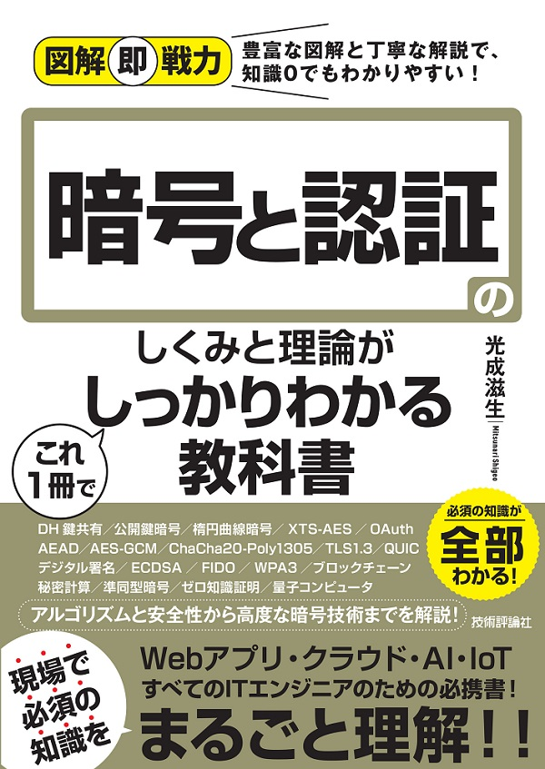

本書は公開鍵暗号や署名などの理論を基礎から詳しく解説し、
TLS1.3やHTTP/3, FIDOなどの新しい技術も紹介します。
更にブロックチェーンで注目されている秘密計算、ゼロ知識証明、量子コンピュータなど最先端の話題も扱います。
情報セキュリティの三要素
情報セキュリティと暗号技術
利便性とコスト
追加された要件
暗号とは
よい暗号と使い方
暗号の動向を知る
パスワードによる認証
パスワード攻撃者の能力
パスワードの攻撃手法
認証の分類
認可
OAuth
シフト暗号
換字式暗号
符号化
アルゴリズムとは
アルゴリズムのステップ数
効率のよい探索
O記法
ビットと表現可能な範囲
セキュリティパラメータ
コンピュータの性能向上と暗号の安全性
運用監視暗号リストと推奨暗号リスト
危殆化の問題点
共通鍵暗号とは
共通鍵暗号に求められる安全性
共通鍵暗号の種類
1ビットの基本変換
論理積と論理和
排他的論理和
交換法則と結合法則
排他的論理和の重要な性質
真の乱数
コンピュータで扱う乱数
擬似乱数
擬似ランダム関数
排他的論理和とワンタイムパッド
情報理論的安全性
ワンタイムパッドの欠点
ワンタイムパッドとストリーム暗号
計算量的安全性
ストリーム暗号の歴史
ナンス
ChaCha20
ブロック暗号
ブロック暗号の歴史
AESの概要
AESの初期設定
ラウンド関数
AES-NI
いつでも同じ暗号文は危険
確率的アルゴリズム
ECB（Electronic CodeBook）モード
CBC（Cipher Block Chaining）モード
CTR（CounTeR）モード
CBCモードとCTRモードの比較
CBCモードに対する攻撃
TPM
ディスクの構造
XTS-AESの概要
XTS-AESの暗号化
XTS-AESの安全性
自己暗号化ドライブ
暗号文の改竄
リプレイ攻撃
現代暗号の始まり
ベキ乗
DH鍵共有
DH鍵共有の安全性
DLPと一方向性関数
ベキ乗の計算方法
有限体
拡大体
公開鍵暗号の概念
共通鍵暗号との違い
強秘匿性と頑強性
ハイブリッド暗号
RSA暗号の具体例
RSA暗号の作り方
RSA暗号の安全性
OpenSSL
RSA暗号の秘密鍵と公開鍵の作成方法
秘密鍵と公開鍵の確認方法
Pythonによる鍵の設定方法
PythonによるRSA暗号の動作確認
楕円曲線
楕円曲線上の演算
楕円曲線の加算公式
ECDHPとECDLP
ECDH鍵共有
楕円曲線暗号の特長
ECDH鍵共有への中間者攻撃
公開鍵暗号への中間者攻撃
指紋とハッシュ関数
ハッシュ関数とは
誕生日パラドックス
ハッシュ関数の歴史
パスワードとハッシュ関数
パスワードの安全な保存方法
ファイルのパスワード暗号化
SHA-2
SHA-3
安全性
SHA-1への攻撃の歴史
衝突したPDFとSHA-1のアルゴリズム
衝突困難性の破り方
PDFに2個のJPEGを埋め込む方法
MACのアルゴリズム
完全性と秘匿性
MACの安全性
MACの構成法
紙の署名とデジタル署名
署名のモデル
署名の安全性
MACと署名
ECDSA
公開鍵認証
FIDO
電力解析攻撃
コールド・ブート攻撃
否認防止と署名の失効
ハッシュ値の連鎖によるタイムスタンプ
署名を用いたタイムスタンプ
日本のタイムスタンプ
ブロックチェーン
ビットコイン
トランザクション
二重送金の防止とマイニング
互いに依存する暗号技術
信用の輪
公開鍵基盤と認証局
フィンガープリント
証明書失効リスト
CRLの問題点
OCSP
OCSPステープリング
その他の方法
ドメイン名
ドメイン認証
ドメイン認証の問題点
組織認証
拡張認証
署名の電子証明書
問題のある認証局や証明書
証明書の透明性
HTTPとHTTPS
SSL/TLSの歴史
TLS 1.3の特長
ハンドシェイクの効率化
暗号化アルゴリズムの整備
新しい鍵導出アルゴリズム
形式手法による安全性検証
秘匿性と完全性
AEADのアルゴリズム
AES-GCM
ChaCha20-Poly1305
盗聴と秘密鍵の漏洩
前方秘匿性
権威DNSサーバとキャッシュDNSサーバ
キャッシュ・ポイズニング
DNSSEC
パブリックDNSサーバ
DoTとDoH
ESNIとECH
HPKE
SMTPとPOP3
S/MIME
Webメール
インターネットプロトコルスイート
データ構造
LANからインターネットへ
VPN
VPNの種別
IPsec
HTTP/2
QUIC
HTTP/3
無線LANの概要
スプーフィングと認証解除攻撃
WEP
WPA2
KRACK
WPA3
準同型
加法準同型暗号
完全準同型暗号
準同型暗号の種類と用途
MPC
秘密分散
VSSとDKGとBLS署名
3PC
3PCの詳細
動機
ゼロ知識証明
ゼロ知識証明の性質
ゼロ知識証明とブロックチェーン
量子ビットと観測
量子ゲート
CNOTゲートと量子もつれ
量子コンピュータにおける計算
量子超越性
暗号技術に対する影響
量子ゲート方式と量子アニーリング方式
量子鍵配送
耐量子計算機暗号
光成滋生@herumi(herumi@nifty.com)
